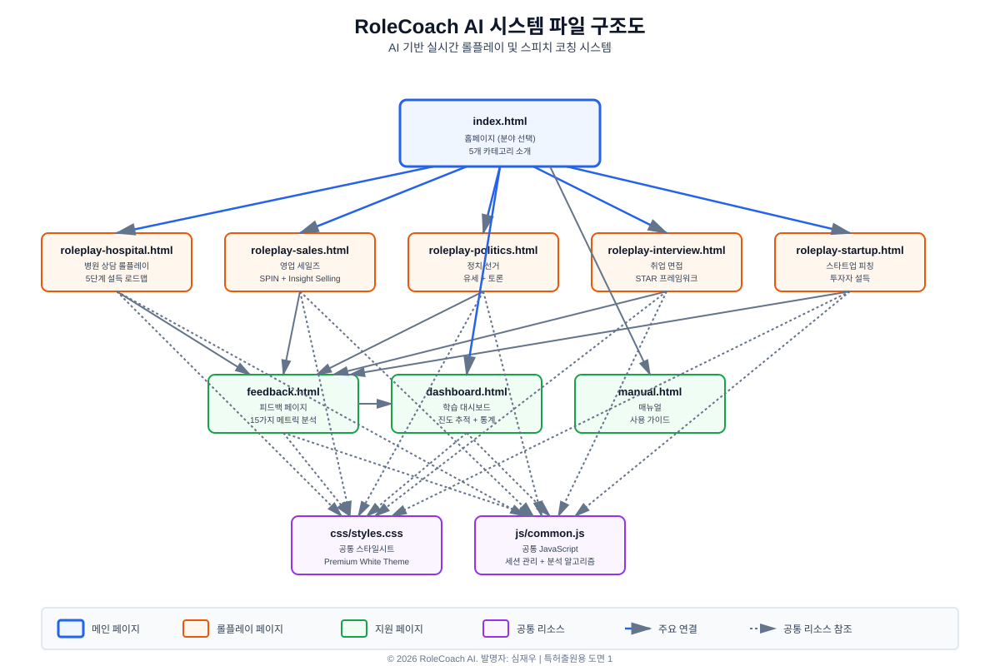
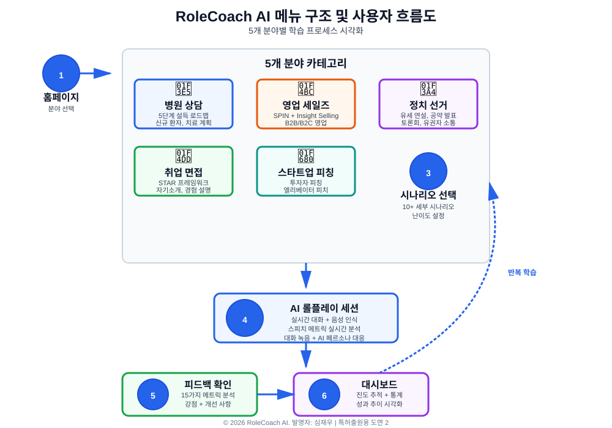

발명의 명칭: AI 기반 실시간 롤플레이 및 스피치 코칭 시스템
발명자: 심재우
출원인: 심재우
출원일: 2026년 6월 3일
출원번호: [출원 후 기재]
대리인: [특허법인/변리사 기재]
본 발명은 인공지능(AI) 기술을 활용하여 다양한 비즈니스 상황에서의 커뮤니케이션 능력을 훈련하는 실시간 롤플레이 및 스피치 코칭 시스템에 관한 것이다. 특히, 병원 상담, 영업 세일즈, 정치 연설, 취업 면접, 스타트업 피칭 등 분야별로 특화된 AI 페르소나와 실전처럼 대화하며, 말하기 속도, 필러 워드, 톤, 프레임워크 준수도 등을 실시간으로 분석하고 전문가 수준의 피드백을 제공하는 시스템이다.
본 발명은 교육 기술(EdTech), 인공지능(AI), 자연어 처리(NLP), 음성 인식(Speech Recognition), 스피치 분석(Speech Analytics) 분야에 속하며, 특히 커뮤니케이션 교육 및 코칭 플랫폼에 관한 것이다.
효과적인 커뮤니케이션 능력은 비즈니스 성공의 핵심 요소이다. 그러나 기존의 커뮤니케이션 교육은 다음과 같은 한계를 가지고 있다:
본 발명은 이러한 문제를 AI 기술로 해결하여, 누구나 언제 어디서나 실전처럼 훈련하고 정량적 피드백을 받을 수 있는 시스템을 제공한다.
본 발명은 다음의 기술 분야를 통합한다:
전통적인 커뮤니케이션 교육은 다음과 같은 방식으로 이루어진다:
Yoodli AI는 글로벌 1위 스피치 코칭 플랫폼으로, 다음 기능을 제공한다:
그러나 다음과 같은 한계가 있다:
본 발명은 다음과 같은 혁신적 기능을 제공한다:
본 발명은 다음의 3가지 핵심 과제를 해결한다:
현재 문제:
해결 방안:
현재 문제:
해결 방안:
현재 문제:
해결 방안:
상기 문제를 해결하기 위해 다음의 기술적 과제를 해결한다:
본 발명은 5단계 프로세스로 구성된 AI 기반 롤플레이 및 스피치 코칭 시스템을 통해 상기 과제를 해결한다.
구성 요소:
기술 구현:
AI 페르소나 구성:
기술 구현:
대화 프로세스:
실시간 분석 항목:
15가지 평가 지표:
종합 점수 산출:
피드백 구성:
대화 녹음 및 재생:
본 발명의 시스템은 다음의 모듈로 구성된다:
본 발명을 통해 다음의 효과를 얻을 수 있다.
정량적 효과:
사용자 혜택:
정량적 효과:
학습 효과:
정량적 효과:
개선 추적:
본 발명은 다음의 산업적 효과를 창출한다:
본 발명의 이해를 돕기 위해 다음의 도면을 첨부한다.

도면 1 상세 설명:
본 발명의 전체 시스템 구성을 나타낸다. 시스템은 크게 5개 레이어로 구성된다:
데이터 흐름: (100) 사용자 음성 입력 → (220) 텍스트 변환 → (310) AI 응답 생성 → (320) 메트릭 분석 → (400) 데이터 저장 → (240) 피드백 시각화

도면 2 상세 설명:
사용자의 학습 여정(User Journey)을 단계별로 나타낸다:
분기점: S120에서 사용자가 뒤로가기 시 S110으로 복귀 가능. S170에서 "다시 도전하기" 선택 시 S120으로 복귀.
도면 3 상세 설명 (개념도):
실시간 롤플레이 세션 동안의 데이터 흐름 및 모듈 간 통신 프로토콜을 나타낸다:
도면 4 상세 설명:
const FILLER_WORDS_KO = ['어', '음', '저기', '그러니까', '뭐', '막', '그냥', '좀'];
function detectFillerWords(text) {
let count = 0;
const words = text.split(/\s+/);
words.forEach(word => {
if (FILLER_WORDS_KO.includes(word)) {
count++;
}
});
const frequency = (count / words.length) * 100; // 100단어당 빈도
return { count, frequency, words: words.length };
}
const SPIN_KEYWORDS = {
S: ['현재', '어떤', '사용하시나요', '방식', '상황'], // Situation
P: ['어려움', '문제', '불편', '고민', '힘들'], // Problem
I: ['계속되면', '영향', '손실', '위험', '결과'], // Implication
N: ['해결되면', '개선', '이점', '효과', '가치'] // Need-Payoff
};
function evaluateSPIN(conversationHistory) {
const stages = { S: false, P: false, I: false, N: false };
const order = [];
conversationHistory.forEach((turn, index) => {
if (turn.role === 'user') {
for (const [stage, keywords] of Object.entries(SPIN_KEYWORDS)) {
if (keywords.some(kw => turn.content.includes(kw))) {
if (!stages[stage]) {
stages[stage] = true;
order.push({ stage, index });
}
}
}
}
});
// 순서 점수: SPIN 순서대로 진행했는지 평가
let orderScore = 0;
for (let i = 0; i < order.length - 1; i++) {
if (['S','P','I','N'].indexOf(order[i].stage) < ['S','P','I','N'].indexOf(order[i+1].stage)) {
orderScore += 25;
}
}
// 완성도 점수: 4단계 모두 실행했는지 평가
const completionScore = Object.values(stages).filter(Boolean).length * 25;
return {
stages,
order,
completionScore,
orderScore,
totalScore: Math.min(100, (completionScore + orderScore) / 2)
};
}
function analyzeWPM(text, durationSeconds) {
const words = text.split(/\s+/).filter(w => w.length > 0);
const wordCount = words.length;
const minutes = durationSeconds / 60;
const wpm = Math.round(wordCount / minutes);
// 적정 범위: 120~160 WPM
let score = 100;
if (wpm < 100 || wpm > 180) {
score = 50; // 너무 느리거나 빠름
} else if (wpm < 120 || wpm > 160) {
score = 75; // 약간 범위 벗어남
}
return { wpm, score, wordCount, durationSeconds };
}
const HONORIFIC_ENDINGS = ['요', '습니다', '니다', '세요', '십니까'];
const CASUAL_ENDINGS = ['야', '어', '지', '네', '냐'];
function analyzeToneConsistency(conversationHistory) {
let honorificCount = 0;
let casualCount = 0;
let totalSentences = 0;
conversationHistory.forEach(turn => {
if (turn.role === 'user') {
const sentences = turn.content.split(/[.!?]/);
sentences.forEach(sentence => {
if (sentence.trim().length > 0) {
totalSentences++;
if (HONORIFIC_ENDINGS.some(ending => sentence.endsWith(ending))) {
honorificCount++;
} else if (CASUAL_ENDINGS.some(ending => sentence.endsWith(ending))) {
casualCount++;
}
}
});
}
});
const consistency = (Math.max(honorificCount, casualCount) / totalSentences) * 100;
return {
honorificCount,
casualCount,
totalSentences,
consistency: Math.round(consistency),
dominantTone: honorificCount > casualCount ? '존댓말' : '반말'
};
}
도면 5 상세 설명:
본 발명에서 사용하는 데이터베이스 테이블 구조:
CREATE TABLE roleplay_sessions ( id UUID PRIMARY KEY DEFAULT uuid_generate_v4(), user_id VARCHAR(50) NOT NULL, category VARCHAR(20) NOT NULL, -- hospital, sales, politics, interview, startup scenario VARCHAR(100) NOT NULL, duration_seconds INTEGER NOT NULL, overall_score INTEGER NOT NULL, -- 0~100 created_at TIMESTAMP DEFAULT NOW() );
CREATE TABLE speech_metrics ( id UUID PRIMARY KEY DEFAULT uuid_generate_v4(), session_id UUID REFERENCES roleplay_sessions(id), wpm INTEGER, -- 말하기 속도 filler_word_count INTEGER, -- 필러 워드 횟수 filler_word_frequency FLOAT, -- 100단어당 빈도 tone_consistency INTEGER, -- 존댓말 일관성 (0~100) framework_score INTEGER, -- 프레임워크 준수도 (0~100) created_at TIMESTAMP DEFAULT NOW() );
CREATE TABLE conversation_history ( id UUID PRIMARY KEY DEFAULT uuid_generate_v4(), session_id UUID REFERENCES roleplay_sessions(id), turn_index INTEGER NOT NULL, role VARCHAR(10) NOT NULL, -- 'user' or 'ai' content TEXT NOT NULL, timestamp TIMESTAMP DEFAULT NOW() );
이하, 본 발명의 바람직한 실시예를 상세히 설명한다.
시나리오: 치과 병원의 신규 환자 초기 상담
사용자 역할: 상담실장
AI 페르소나 역할: 임플란트 치료를 고려 중인 50대 환자
훈련 목표: 5단계 설득 로드맵 적용 (라포 형성 → 니즈 파악 → 가치 제안 → 반론 처리 → 행동 촉구)
세션 진행 과정:
시나리오: B2B SaaS 제품 영업
사용자 역할: 세일즈 매니저
AI 페르소나 역할: 중소기업 IT 담당자
훈련 목표: SPIN 4단계 질문 기법 숙달
SPIN 적용 예시:
피드백:
시나리오: 대기업 신입사원 면접
사용자 역할: 면접 지원자
AI 페르소나 역할: 면접관
훈련 목표: STAR 구조 답변 연습
STAR 적용 예시:
피드백:
시나리오: 투자자 앞 30초 피칭
사용자 역할: 창업가
AI 페르소나 역할: VC 투자자
훈련 목표: 핵심 메시지 전달, 시간 관리
사용자 피칭 예시:
"저희는 AI 기반 커뮤니케이션 코칭 플랫폼 RoleCoach를 운영합니다. 기존 1:1 코칭은 시간당 30만 원이지만, 저희는 월 5만 원으로 무제한 훈련을 제공합니다. 현재 병원, 영업, 면접 등 5개 분야에서 300개 기업이 사용 중이며, 월 매출 3억 원을 달성했습니다. 시리즈 A 투자로 글로벌 확장을 준비 중입니다."
피드백:
인공지능 기반 실시간 롤플레이 및 스피치 코칭 시스템에 있어서, (a) 사용자가 복수의 비즈니스 분야 중 하나를 선택하고, 선택된 분야의 세부 시나리오를 선택하는 시나리오 선택 모듈; (b) 선택된 시나리오에 따라 역할, 성격, 대화 스타일이 정의된 AI 페르소나를 초기화하는 AI 페르소나 모듈; (c) 사용자의 음성 입력을 실시간으로 텍스트로 변환하고, 상기 텍스트를 AI 페르소나에게 전송하여 응답을 생성하며, 생성된 응답을 음성으로 출력하는 실시간 대화 처리 모듈; (d) 상기 대화 과정에서 말하기 속도, 필러 워드 빈도, 톤 일관성, 프레임워크 준수도를 포함한 복수의 스피치 메트릭을 실시간으로 추출하는 분석 모듈; 및 (e) 추출된 스피치 메트릭을 기반으로 종합 점수를 산출하고, 강점 및 개선 사항을 포함한 피드백을 생성하는 피드백 모듈을 포함하는 것을 특징으로 하는 AI 기반 실시간 롤플레이 및 스피치 코칭 시스템.
청구항 1에 있어서, 상기 복수의 비즈니스 분야는 병원 상담, 영업 세일즈, 정치 선거, 취업 면접, 스타트업 피칭을 포함하며, 각 분야별로 10개 이상의 세부 시나리오가 제공되는 것을 특징으로 하는 시스템.
청구항 1에 있어서, 상기 AI 페르소나 모듈은 GPT-4o 또는 Claude API에 역할, 성격, 상황, 목표를 정의한 시스템 프롬프트를 주입하여 페르소나를 구성하며, 대화 이력을 Context Window에 유지하여 일관된 역할 수행을 보장하는 것을 특징으로 하는 시스템.
청구항 1에 있어서, 상기 실시간 대화 처리 모듈은 Web Speech API를 이용하여 음성 인식을 수행하고, Web Audio API를 이용하여 대화 전체를 녹음하며, 상기 녹음 파일을 사용자가 재생 및 다운로드할 수 있도록 제공하는 것을 특징으로 하는 시스템.
청구항 1에 있어서, 상기 분석 모듈은 말하기 속도(Words Per Minute), 필러 워드 빈도(100단어당 횟수), 톤 일관성(존댓말 준수율), 프레임워크 준수도(SPIN, STAR 등), 핵심 키워드 사용 빈도, 공감 표현 빈도, 반론 처리 능력, 숫자/데이터 활용도, 질문 활용도, 시간 관리, 요약 및 정리 능력, 행동 촉구(CTA), 신뢰 구축 언어, 긍정적 프레이밍 비율을 포함하는 15가지 스피치 메트릭을 추출하는 것을 특징으로 하는 시스템.
청구항 1에 있어서, 상기 분석 모듈은 한국어 특화 필러 워드 탐지 알고리즘을 포함하며, "어", "음", "저기", "그러니까", "뭐", "막" 등의 한국어 필러 워드를 사전 기반으로 탐지하고, 100단어당 필러 워드 빈도를 산출하는 것을 특징으로 하는 시스템.
청구항 2에 있어서, 상기 분석 모듈은 존댓말 일관성을 분석하기 위해 "요", "니다", "습니다" 등의 어미를 탐지하고, 전체 문장 중 존댓말 사용 비율을 산출하여 톤 일관성 점수를 부여하는 것을 특징으로 하는 시스템.
청구항 1에 있어서, 상기 분석 모듈은 SPIN Selling 프레임워크 준수도를 평가하기 위해, 대화 내용에서 Situation(상황 파악), Problem(문제 인식), Implication(문제 확대), Need-Payoff(해결 가치) 단계별 키워드를 탐지하고, 각 단계의 실행 여부 및 순서를 분석하여 0~100점의 프레임워크 준수도 점수를 산출하는 것을 특징으로 하는 시스템.
청구항 3에 있어서, 상기 분석 모듈은 STAR 프레임워크 준수도를 평가하기 위해, 대화 내용에서 Situation(상황), Task(과제), Action(행동), Result(결과) 단계별 키워드를 탐지하고, 각 단계의 명확성 및 구조를 분석하여 점수를 산출하는 것을 특징으로 하는 시스템.
청구항 1에 있어서, 사용자의 학습 이력을 저장하고, 세션별 점수, 분야별 평균 점수, 스피치 메트릭 추이를 시각화하여 제공하는 대시보드 모듈을 더 포함하며, 상기 대시보드 모듈은 사용자의 약점을 진단하고 맞춤형 훈련 시나리오를 추천하는 것을 특징으로 하는 시스템.
AI 기반 실시간 롤플레이 및 스피치 코칭 시스템
본 발명은 인공지능 기술을 활용하여 병원 상담, 영업 세일즈, 정치 연설, 취업 면접, 스타트업 피칭 등 다양한 비즈니스 상황에서의 커뮤니케이션 능력을 실전처럼 훈련할 수 있는 시스템이다. AI 페르소나가 고객, 면접관, 유권자 등의 역할을 수행하며 사용자와 실시간 대화를 진행하고, 말하기 속도, 필러 워드, 톤, 프레임워크 준수도 등 15가지 스피치 메트릭을 실시간으로 분석하여 객관적 피드백을 제공한다. 기존 1:1 코칭 대비 비용을 99% 절감하고, 언제 어디서나 무제한 훈련이 가능하며, SPIN Selling, STAR 등 검증된 커뮤니케이션 프레임워크를 자동으로 평가하여 학습 효율을 극대화한다.
도면 1 (시스템 파일 구조도) 및 도면 2 (메뉴 구조 및 사용자 흐름도) 참조
핵심 파일 구조:
본 발명의 개발 이력은 Git 버전 관리 시스템에 기록되어 있으며, 다음과 같은 주요 커밋이 존재한다:
프론트엔드:
AI 엔진:
데이터 저장:
배포:
본 발명은 글로벌 1위 스피치 코칭 플랫폼 Yoodli AI를 벤치마킹하되, 다음의 차별화 요소를 추가하였다:
저작권자: 심재우
저작권 등록일: [한국저작권위원회 등록 후 기재]
이메일: jaiwshim@gmail.com
라이선스: Proprietary (상업적 권리 보유)
다음의 증빙 자료를 첨부한다: